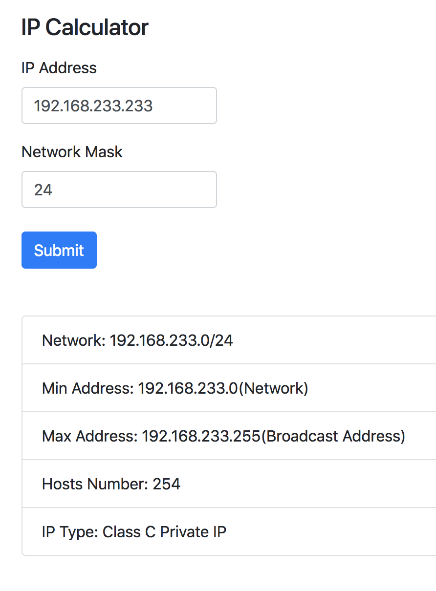

Yumin Chen, CS460, HW#2
This is a IP Calculator, user provided IP address or network number, the program will return the related network number, broadcast address, maximum host number and address type. This program was written by JS and HTML with jQuery.
For this HW, all the codes is in different branch and will be merge when finish, follow code show how to create and shift to different branch:
git clone https://github.com/xxx/xxx.git
git branch hw2_js
git checkout hw2_js
git add hw2
git commit -m "XXXX"
git push origin hw2_js
Aso user follow code to view your remote branch and checkout the branch:
git branch -a
git checkout hw2_js
There are two input textarea for user to input the IP and network mask and one button for submit request. The result will display right below the input section, the result section won't display anything when there is not result. Follow wireframe diagram show the design:
My calculator require a input from user so I need something on page to let user input the IP and network mask, the code below show the steps:
<form id="ipInfo">
<fieldset>
<legend>IP </legend>
IP: <input type="text" id="ip1">.
<input type="text" id="ip2">.
<input type="text" id="ip3">.
<input type="text" id="ip4"><br>
<br>
Network Mask: /<input type="text" id="mask">(i.e. 24)<br>
<br />
<input type="submit" value="Show" />
<br />
</fieldset>
</form>
By operating the DOM, I am able to catch user input for calculation and updated the result and return as HTML. The code below show how I catch the network mask and return result:
Catch:
Network Mask: /<input type="text" id="mask">(i.e. 24) //HTML network mask input text
...
var mask = $('#mask').val().trim(); //jQuery style DOM operation
Update:
<div id="resultReturn"> //UI side, where result will display
<!-- JS Result to Here -->
</div>
$('#resultReturn').html( //JS side, return to UI
'<h5 class="mt-5"> XXX </h5>'
);
The general idea is convert the network mask to wilcard and then calculate the max available ip address. Follow show basic calculation and result screenshot:
IP: 192.168.1.0 11000000.10101000.00000001.00000000
Mask: 255.255.255.0 11111111.11111111.11111111.00000000
Wildcard: 0.0.0.255 00000000.00000000.00000000.11111111
^
2^8=256 (Available Address)
256-2=254 (Available HOST Address)
P.S. The first address of a IP range is network number and the last address is boradcast address,
none of those address can be used by user.

After all done, merge the new branch to master, follow code show steps:
git branch master
git merge hw2_js